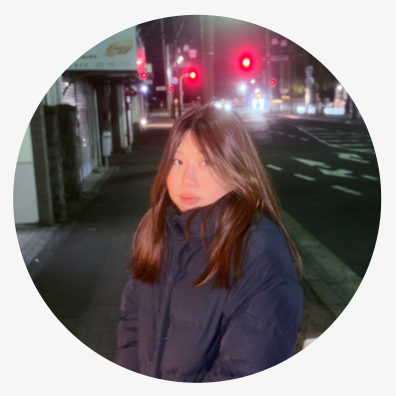

物体視覚思考
写真のように正確なイメージを持つ
正確な形や位置を
VISUAL THINKER
頭の中で、絵やイメージを使って考える人を「ビジュアルシンカー（視覚思考者）」と呼びます。わたし自身もそのひとりです。ビジュアルシンカーがもう少し生きやすくなるように、コミュニティづくりや講演をしています。
視覚思考者
絵やイメージで思考する感覚がある人のこと
同じ「木・魚・くも・雨・愛」でも、浮かび方も、話し方もちがいます。
えっと、木が…あって、……魚と、くもと、あ、雨も。…あと、愛！
木と魚と、くもと雨と、愛。
言葉で話すとき、頭の中のイメージを言葉に翻訳する感覚がある。 だから、話したいことは決まっていても、言葉になるまでに時間がかかることがあります。
ビジュアルシンカー（視覚思考者）に対する概念として、テキストシンカー（言語思考者）がいます。
「ビジュアルシンカーの人」と「テキストシンカーの人」がいるのではなく、だれもが両方の特性を、それぞれの割合で持っています。
ビジュアルシンカーは、大きく2つのタイプに分けられます
写真のように正確なイメージを持つ
正確な形や位置を
パターンと抽象的な概念を持つ
ものとものの関係を
当てはまるものにチェックしてみてください
あなたのビジュアルシンカー度
0 / 18 こ 当てはまりました
チェックすると、つまみが動きます。
※ これは診断ではありません。ビジュアルシンカーかどうかを決めるものではなく、自分の考え方に気づくきっかけとして使ってください。
ビジュアルシンカーが生きやすくなるための、3つの活動
COMMUNITY
ビジュアルシンカーの対面コミュニティ
ビジュアルシンカーが集まる、対面コミュニティをつくっています。頭の中の感覚や、困っていること、うまくいった工夫を、同じ感覚を持つ人どうしで話せる場所です。
「自分、ビジュアルシンカーかも…」くらいの人も大歓迎です。集まりのお知らせや連絡は、Discordでやりとりしています。
参加する（Discord）TALK
ビジュアルシンカーについてお話します
ビジュアルシンカーとは何か、どんなことが得意で、何に困っているのか。自分の体験をまじえてお話ししています。ビジュアルシンカーについての理解が深まるワークショップも行っています。
これまでの講演
TOOL
会話を、みんなが同じ形で見られるように
会話の内容を、その場でビジュアルに描き起こす、パソコンで使うツールを開発しています。ビジュアルシンカーのためだけではなく、会話している全員が共通の認識を持てるようにするためのツールです。
いまは開発中です。できあがったら、このページでお知らせします。
自分、ビジュアルシンカーかも…
この人、ビジュアルシンカーかも…
そう思ったら、ぜひ声をかけてください
頭の中がどんなふうになっているか、どんなことで困っているか。コミュニティ「Eyedea」で、いろんな人の話を聞きながら、ビジュアルシンカーが生きやすくなる方法を一緒に考えたいと思っています。

村松 つかさ
建築を学びながら、デザインのお仕事もしています。学生団体 K-Lab. では、プロムイベントや炬燵カフェを企画・運営してきました。いまは、自分自身のビジュアルシンカーという特徴から、ビジュアルシンカーが生きやすくなる方法を考えて活動しています。